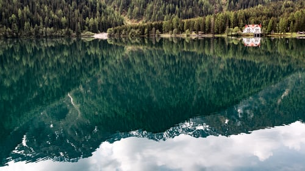
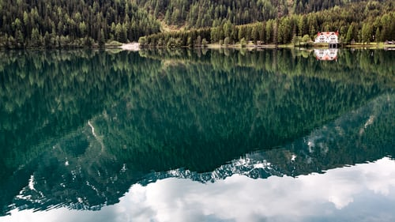

We choose hotels which offer a great location, a high standard of comfort and quality, and a solid value to our guests. These inns offer a superbly satisfying mix of a welcoming atmosphere, traditional cuisine, and authentic charm. They are typically small, independently-owned properties which reflect the character and hospitality of the surrounding alpine community. We know the owners personally, have a longstanding relationship with them, and we find they bend over backwards to provide our guests with an exceptional experience.
Excursion in the Alps
Choose your Trip

 



2022 Tour dates
Sept 19 - 29 - Deluxe Haute Route– Chamonix to Zermatt – Classic trek has a new standard
Sept 26 - Oct 5 - Scenic Alps by Rail– The Grand Train Tour of Switzerland
Sept 29 - Oct 5 - Discover Swiss Cuisine - Italian Inspired - A culinary adventure in Lugano
Oct 9 - 18 - Scenic Alps by Rail – The Grand Train Tour of Switzerland
Dec 3 - 11 - Christmas in Switzerland - Enjoy authentic Switzerland at its holiday best
Dec 5 - 13 - Christmas in Switzerland - Enjoy authentic Switzerland at its holiday best